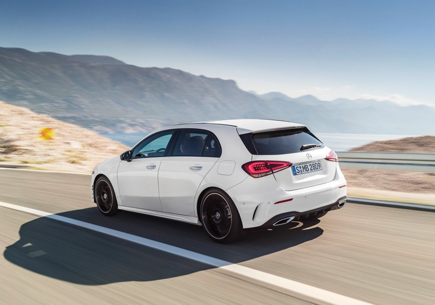

Mercedes A-Class Hatchback
The Mercedes-Benz A-Class Hatchback is a compact luxury car that combines a sporty design with a premium interior and everyday practicality. It is smaller and easier to manoeuvre than Mercedes-Benz’s larger models, making it well suited to city driving. The cabin typically features modern digital displays, Mercedes’ infotainment system, comfortable seating, and a high-quality feel. Its hatchback body also provides useful boot space while keeping the car relatively compact.


On the road, the A-Class is designed to offer a balance of comfort, efficiency, and responsive handling. Different engines and performance versions are available depending on the market, including the sporty Mercedes-AMG A 35 and A 45 S models. Overall, the A-Class Hatchback is a good choice for drivers who want Mercedes-Benz styling, technology, and luxury in a smaller, practical package.